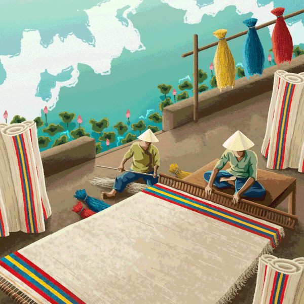

Việt Họa Ký
"Nối mạch nghìn năm khơi màu di sản
Nơi những nét kẻ vẽ câu truyện văn hóa Việt."
"Mỗi bức tranh dân gian không chỉ là nghệ thuật, mà là một cuốn biên niên sử bằng hình ảnh của dân tộc."
Từ chốn cung đình đến miền quê dân dã, từ bức tranh treo tường ngày Tết đến pháp khí chốn linh thiêng. Dự án này là lời tri ân gửi đến những nghệ nhân thầm lặng đang gìn giữ hồn cốt của đất nước.
Các Dòng Tranh
Trải nghiệm sự phong phú của nghệ thuật dân gian qua các vùng miền văn hóa khác nhau.
Giá Trị Của Website
Chúng tôi tạo ra Việt Họa Ký với mong muốn mang lại những giá trị thiết thực trong việc bảo tồn và phát triển nghệ thuật dân gian.
Tôn Vinh Nghệ Nhân
Đưa những tác phẩm truyền thống vượt ra khỏi không gian làng nghề, đến gần hơn với công chúng hiện đại. Ghi nhận công sức thầm lặng của những người giữ lửa.
Giáo Dục & Tiếp Cận
Trở thành kho tư liệu sống động cho học sinh, sinh viên và giới trẻ. Giúp họ dễ dàng tiếp cận và hiểu được chiều sâu văn hóa ẩn sau từng đường nét dân gian.
Lan Tỏa Di Sản
Mở ra một "cánh cửa" trực tuyến, đưa nghệ thuật tranh dân gian Việt Nam vượt qua rào cản địa lý để tiếp cận với những người yêu nghệ thuật trong và ngoài nước.
Chuyên mục sắp ra mắt
Việt Họa Ký đang trong quá trình hoàn thiện và sẽ sớm cập nhật thêm nhiều chuyên đề hấp dẫn. Hãy cùng đón chờ những nội dung mới nhất về kỹ thuật chế tác, những câu chuyện chưa kể phía sau mỗi bức tranh và những góc nhìn sâu sắc về nghệ thuật dân gian Việt Nam.
